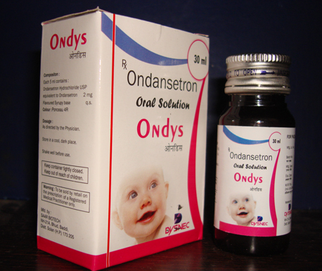

Indications:- Antiemetic.
-

Ondansetron Suspension(Drops)

Ondansetron Hydrochloride
DROPS PRESENTATION:
Each 5 ml contains:
Ondansetron Hydrochloride IP 2 mg
Eq. to Ondansetron
Ondansetron HCL Suspension (Drops) :
This medication is used alone or with other medications to prevent nausea and vomiting caused by cancer drug treatment (chemotherapy) and radiation therapy. It is also used to prevent and treat nausea and vomiting after surgery. It works by blocking one of the body's natural substances (serotonin) that causes vomiting.

- Prevention of nausea and vomiting associated with highly emetogenic cancer chemotherapy, including cisplatin ≥ 50 mg/m2.
- Prevention of nausea and vomiting associated with initial and repeat courses of moderately emetogenic cancer chemotherapy.
- Prevention of nausea and vomiting associated with radiotherapy in patients receiving either total body irradiation, single high-dose fraction to the abdomen, or daily fractions to the abdomen.
- Prevention of postoperative nausea and/or vomiting. As with other antiemetics, routine prophylaxis is not recommended for patients in whom there is little expectation that nausea and/or vomiting will occur postoperatively. In patients where nausea and/or vomiting must be avoided postoperatively, ondasterone is recommended even where the incidence of postoperative nausea and/or vomiting is low.

Absorption: Owing to hepatic first-pass metabolism, its bioavailability is only about 60%.
Distribution: Plasma protein binding of ondansetron as measured in vitro was 70% to 76%, over the pharmacologic concentration range of 10 to 500 ng/mL. Circulating drug also distributes into erythrocytes.
Metabolism: Ondansetron is extensively metabolized in humans, with approximately 5% of a radiolabeled dose recovered as the parent compound from the urine. The primary metabolic pathway is hydroxylation on the indole ring followed by subsequent glucuronide or sulfate conjugation.
Elimination: In adult cancer patients, the mean ondansetron elimination half-life was 4.0 hours, and there was no difference in the multidose pharmacokinetics over a 4-day period.

Ondasteron interacts with the following drugs; thereby their co-administraton should be carefully monitored simultaneously:
- Drugs Affecting Cytochrome P-450 Enzymes
- Apomorphine
- Phenytoin, Carbamazepine, and Rifampin
- Tramadol
- Chemotherapy
- Temazepam

- Headache
- Lightheadedness
- Dizziness
- Drowsiness
- Tiredness
- Constipation

- Contraindicated for patients known to have hypersensitivity (e.g., anaphylaxis) to this product or any of its components.
- The concomitant use of apomorphine with ondansetron is contraindicated based on reports of profound hypotension and loss of consciousness when apomorphine was administered with ondansetron.

- QT Prolongation -Ondansetron prolongs the QT interval in a dose-dependent manner. Avoid ondasterone in patients with congenital long QT syndrome.
- The use of ondasterone in patients following abdominal surgery or in patients with chemotherapy-induced nausea and vomiting may mask a progressive ileus and gastric distention.
Use In Specific Populations :
- Ondasterone should be used during pregnancy only if clearly needed.
- Caution should be exercised when ondansetron is administered to a nursing woman.
- It is recommended that patients less than 4 months of age receiving this drug be closely monitored.
- Caution should be exercised when ondasterone is administered to a patient with renal or hepatic impairment.